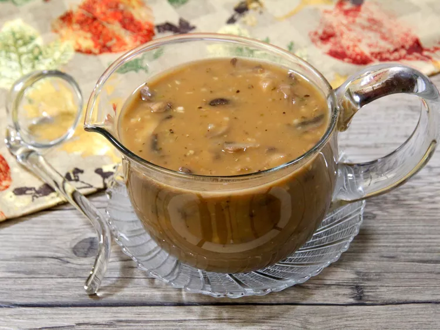

Marsala Sauce
Description
This classic Italian marsala sauce is easy-to-make, rich, and earthy. It tastes great over steak, chicken, pork, potatoes, or polenta.
Ingredients
- Butter
- White Mushrooms
- Shallot
- Garlic
- Dried Rosemary
- Flour
- Marsala Wine
- Beef Broth
- Port Wine (Optional)
- Salt and Pepper
Steps
- Melt butter in a saucepan over medium-low heat. Add mushrooms, shallot, garlic, and rosemary and cook, stirring occasionally, until mushrooms are tender, 4 to 5 minutes.
- Sprinkle flour over the mushroom mixture and cook, stirring constantly, for 1 minute. Deglaze the pan by pouring in the marsala, and cook for about 2 minutes.
- Increase heat to medium, stir in beef broth and port, and cook until sauce starts to reduce and thicken to your preference, 10 to 12 minutes. Season with salt and pepper, taste, and adjust any of the ingredients to your liking.
Chef's Note: Sauce may be stored in the refrigerator for up to 2 days; just warm gently before serving. If you prefer, feel free to use thyme in place of rosemary and baby bella mushrooms instead of white mushrooms.